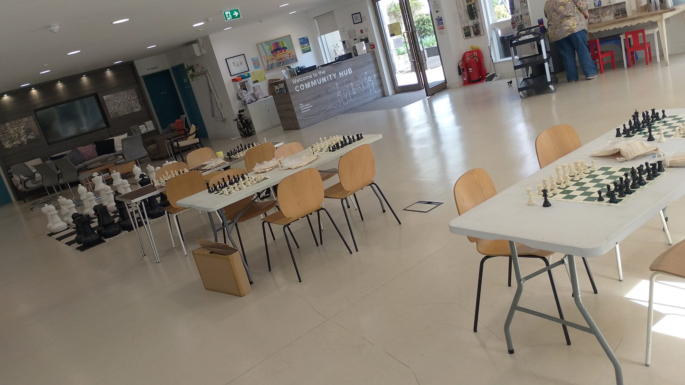

Community chess sessions
From first-time players to experienced regulars, everyone can join, practise strategic thinking, and enjoy meaningful local connection.
Explore the Chess StoryOF.F Wellbeing Circle Activity
Think. Play. Belong.
A welcoming chess community where residents can play, learn, focus, and connect across generations.

From first-time players to experienced regulars, everyone can join, practise strategic thinking, and enjoy meaningful local connection.
Explore the Chess Story